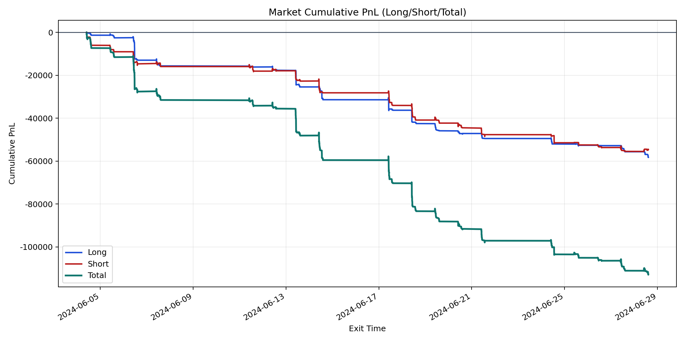
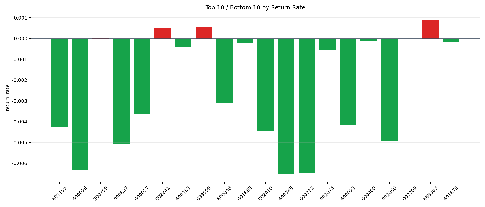

| repo_root | /home/haoranyou/data/output/dynamic_AUM_TAKER |
|---|---|
| period_months | 1 |
| period_label | 2024-06-04_to_2024-06-28 |
| start_time | 2024-06-04 09:49:02 |
| end_time | 2024-06-28 14:37:37 |
| n_trades | 3388 |
| n_symbols | 38 |
| total_pnl | -112870.58234999994 |
| long_total_pnl | -58225.80814999975 |
| short_total_pnl | -54644.774200000174 |
| total_entry_notional | 61746138.0 |
| long_entry_notional | 27730313.0 |
| short_entry_notional | 34015825.0 |
| total_return_rate | -0.0018279780081144497 |
| long_return_rate | -0.0020997169469381665 |
| short_return_rate | -0.0016064515324852528 |
| top_symbols_by_return | ["688303", "688599", "002241", "300759", "002709", "600460", "601878", "601865", "600183", "002074"] |
| bottom_symbols_by_return | ["600745", "600732", "600026", "000807", "002050", "002410", "601155", "600023", "600027", "600048"] |

